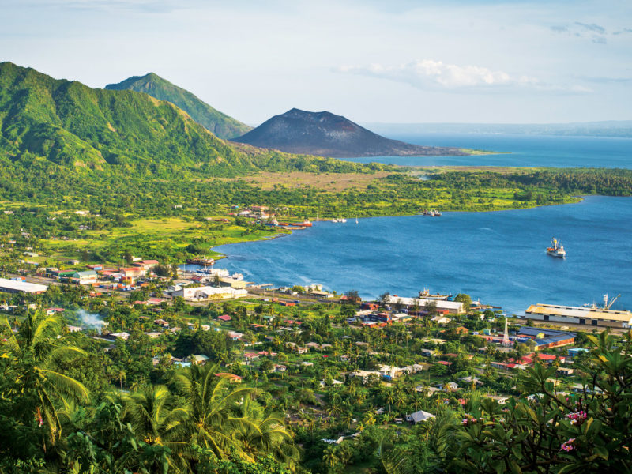
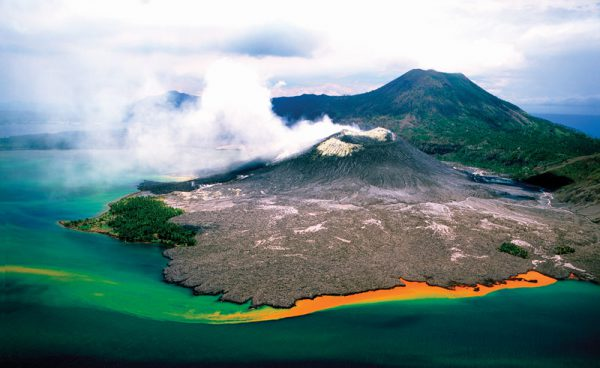

-


Mount Tavurvur is an active volcano located near Rabaul in East New Britain Province, Papua New Guinea. It is part of the Rabaul Caldera and is well known for its frequent eruptions, particularly the major eruption in 1994 that heavily damaged Rabaul town. Despite its relatively small size, Tavurvur is highly active, often releasing ash clouds and steam, and it remains an important natural landmark and a reminder of the region’s volcanic activity.